전기기능사 (2002-04-07 기출문제)
1과목: 전기 이론
1. 2[㎌], 3[㎌], 4[㎌]의 콘덴서 3개를 병렬로 연결할때 합성 정전용량[㎌]은?
- 0.7
- 9
- 1.5
- 12
(정답률: 89%)

2. 10[㎝] 떨어진 2장의 금속 평행판 사이의 전위차가 500[V]일때 이 평행판 안에서 전위의 기울기는?
- 5[V/m]
- 50[V/m]
- 500[V/m]
- 5000[V/m]
(정답률: 42%)
3. 전류와 자속에 관한 설명 가운데 옳은 것은?
- 전류와 자속은 항상 폐회로를 이룬다.
- 전류와 자속은 항상 폐회로를 이루지 않는다.
- 전류는 폐회로이나 자속은 아니다.
- 자속은 폐회로이나 전류는 아니다.
(정답률: 61%)
4. 가우스의 정리는 무엇을 구하는데 사용하는가?
- 자장의 세기
- 자위
- 전장의 세기
- 전위
(정답률: 54%)
5. 용량 리액턴스와 반비례 하는 것은?
- 전압
- 저항
- 임피던스
- 주파수
(정답률: 46%)
6. 그림과 같이 자극사이에 있는 도체에 전류 Ｉ가 흐를때 힘은 어느 방향으로 작용하는가?
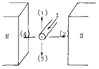
- (1)
- (2)
- (3)
- (4)
(정답률: 72%)
7. 내부저항 0.1[Ω]인 건전지 10개를 직렬로 접속하고 이것을 한조로 하여 5조 병렬로 접속하면 합성 내부저항[Ω]은?
- 0.2
- 0.3
- 1
- 5
(정답률: 50%)
8. 3[Ω]의 저항이 5개, 7[Ω]의 저항이 3개, 114[Ω]의 저항이 1개 있다. 이들을 모두 직렬로 접속할 때의 합성저항[Ω]은?
- 120
- 130
- 150
- 160
(정답률: 83%)
9. 그림과 같은 병렬 회로에서 a, b 단자에서 본 역률값은? (단, a, b 단자간에 E[V]의 교류 전압을 가한다.)
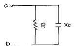
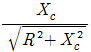
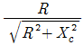
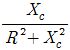
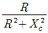
(정답률: 43%)
10. i=Ｉm sin ω t인 사인파 교류에서 ω t가 몇도일때 순시값과 실효값이 같게 되는가?
- 0°
- 45°
- 60°
- 90°
(정답률: 54%)
11. [VA]는 무엇의 단위인가?
- 유효전력
- 무효전력
- 피상전력
- 역률
(정답률: 64%)
12. 전기분해에 의해 전극에 석출된 물질의 양은 통과한 전기량과 그 물질의 전기 화학당량에 비례하는 것은?
- 주울의 법칙
- 앙페르의 법칙
- 패러데이의 법칙
- 렌즈의 법칙
(정답률: 71%)
13. 두금속의 접속점에 온도차를 주면 열기전력이 생기는 현상은?
- 제어벡 효과
- 펠티에 효과
- 톰슨 효과
- 볼타 효과
(정답률: 58%)
14. 원자핵의 구속력을 벗어나서 물질내에서 자유로이 이동할 수 있는 것은?
- 중성자
- 양자
- 분자
- 자유전자
(정답률: 87%)
15. 쿨롱의 법칙에서 2개의 점전하 사이에 작용하는 정전력의 크기는?
- 두전자량의 곱에 비례하고 전자량 사이의 거리제곱에 반비례한다.
- 두전기량의 곱에 비례하고 전기량 사이의 거리제곱에 비례한다.
- 두전하의 곱에 비례하고 전하 사이의 거리의 제곱에 비례한다.
- 두전기량의 곱에 비례하고 전기량 사이의 거리의 제곱에 반비례한다.
(정답률: 55%)
16. 빛을 많이 쬐어 줄수록 자유 전자가 증가하여 저항이 감소되는 소자는?
- IC
- Diode
- CdS
- TRIAC
(정답률: 48%)
17. 주어진 전선의 지름을 균일하게 2배로 줄였다면 저항 값은 몇 배인가?
- 2
- 3
- 4
- 1/2
(정답률: 56%)
18. 그림과 같은 회로에서 합성 임피던스[Ω] 값은?
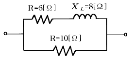
- 1
- 2
- 3
- 5
(정답률: 50%)
19. 저압구내 가공 인입선을 DV 전선으로 시설할 때 긍장이 20[m]인 경우에 몇 [mm]이상의 DV전선을 사용하여야 하는 가?
- 2.0
- 2.6
- 3.2
- 5.0
(정답률: 50%)
20. 높은 온도 및 기름에 잘 견디는 전기용 절연 테이프는?
- 리노 테이프
- 고무 테이프
- 비닐 테이프
- 블랙 테이프
(정답률: 68%)
2과목: 전기 기기
21. 경질 비닐관의 가공 작업으로 볼수 없는 것은?(오류 신고가 접수된 문제입니다. 반드시 정답과 해설을 확인하시기 바랍니다.)
- 90도 구부리기
- 2호 박스 커넥타 만들기
- S형 및 반오프셋 만들기
- 커플링과 부싱 만들기
(정답률: 34%)
22. 저압단상 3선식 회로의 중심선에서 퓨즈 사용법은?
- 다른선의 퓨즈와 같은 용량의 퓨즈를 사용한다.
- 퓨즈를 사용하지 않는다.
- 다른선 퓨즈의 1/2 용량의 퓨즈를 사용한다.
- 다른선 퓨즈의 3배 용량의 퓨즈를 사용한다.
(정답률: 46%)
23. 금속관 및 그 부속품은 제 몇종 접지공사에 의하여 접지해야 하는가?(관련 규정 개정전 문제로 여기서는 기존 정답인 3번을 누르면 정답 처리됩니다. 자세한 내용은 해설을 참고하세요.)
- 제1종 접지공사
- 제2종 접지공사
- 제3종 접지공사
- 특별 제3종 접지공사
(정답률: 63%)
24. 저압 가공 인입선의 인입구에 사용하는 부속품은?
- 플로어 박스
- 절연부싱
- 엔트런스 캡
- 노말벤드
(정답률: 57%)
25. 설비용량이 600[KW], 부등률 1.2, 수용률 0.6 일때 합성 최대 전력[KW]은?
- 240
- 300
- 432
- 833
(정답률: 41%)
26. 전동기에 공급하는 간선의 설계에서 3개의 분기회로에 각각 10[A], 20[A], 30[A] 의 정격전류가 흐르는 전동기가 접속 되어있다. 간선의 허용전류의 최저값으로 가장 적당한 것은?
- 60
- 70
- 80
- 100
(정답률: 34%)
27. 유니온 커플링의 사용 목적은?
- 내경이 틀린 금속관 상호의 접속
- 돌려 끼울수 없는 금속관 상호의 접속
- 금속관의 박스와의 접속
- 금속관 상호를 나사로 연결하는 접속
(정답률: 44%)
28. 옥내에 시설하는 저압전로와 대지사이의 절연저항 측정에 사용되는 계기는?
- 메거
- 어스테스터
- 회로 시험기
- 코올라우쉬브리지
(정답률: 57%)
29. 연피 케이블 접속법은?
- 단자 접속함 접속
- 주철 직선 접속함 접속
- 무단자 접속함 접속
- 애자 사용 접속
(정답률: 26%)
30. 금속덕트, 버스더트, 플로어덕트에는 어떤 접지를 해야 하는가?
- 금속덕트는 제3종, 버스덕트는 제1종, 플로어 덕트는 안한다.
- 모두 제3종 접지공사를 한다.
- 덕트공사는 모두 제2종 접지공사를 한다.
- 덕트공사는 특별히 접지하지 않아도 된다.
(정답률: 57%)
31. 전동기의 정격전류가 4[A]이다. 전동기 전용의 분기회로(3m 이내)에서 전동기에 이르는 전선의 허용전류는 얼마인가?
- 4[A]
- 5[A]
- 8[A]
- 10[A]
(정답률: 43%)
32. 버스덕트 공사에서 덕트를 조영재에 붙이는 경우에는 덕트의 지지점간의 거리를 몇[m] 이하로 하여야 하는가?
- 3
- 4.5
- 6
- 9
(정답률: 55%)
33. 그림에서 A 는 무엇인가?
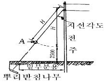
- 지선로드
- 지선밴드
- 지선애자
- 아이볼트
(정답률: 54%)
34. 전기공사 시공에 필요한 공구사용법 설명 중 잘못된것은?
- 콘크리트의 구멍을 뚫기 위한 공구로 타격용 임팩트 전기드릴을 사용한다.
- 스위치박스에 전선관용 구멍을 뚫기 위해 노크아웃펀치를 사용한다.
- 파상형 합성수지 가요전선관의 굽힘작업을 위해 토오치 램프를 사용한다.
- 금속 전선관의 굽힘 작업을 위해 파이프 밴더를 사용한다.
(정답률: 53%)
35. 배선기구의 설명으로 잘못된 것은?
- 배선용 차단기는 전로의 개폐 및 과 전류에 대해 전로를 자동 차단한다.
- 누전차단기는 지락전류를 영상 변류기에서 검출하여 개폐부를 자동 차단한다.
- 전자접촉기는 과부하 보호를 위해 열동형 계전기를 조합한 개폐기이다.
- 푸시버튼 스위치는 수동조작 자동복귀형 스위치이다.
(정답률: 44%)
36. 옥내배선의 박스 내에서 가는 전선을 접속할 때 어떤 방법으로 접속 하는가?(오류 신고가 접수된 문제입니다. 반드시 정답과 해설을 확인하시기 바랍니다.)
- 브리타니아 접속
- 트위스트 접속
- 슬리브 접속
- 쥐꼬리 접속
(정답률: 59%)
37. 가제 테이프(gauze tape)에 점착성의 고무 혼합물을 양면에 함침시킨 전기용 절연 테이프는?
- 면 테이프
- 고무 테이프
- 자기 융착 테이프
- 리노 테이프
(정답률: 28%)
38. 합성 수지 몰드 공사의 설명 중 틀린 것은?
- 사용 전선은 옥내용 절연 전선을 사용한다.
- 몰드 안에는 전선의 접속점을 만들지 않아야 한다.
- 전개된 장소와 점검할 수 있는 음폐 장소의 건조한 장소에 한하여 시설할 수 있다.
- 베이스의 홈의 나비와 깊이는 10[㎝]이하이어야 한다.
(정답률: 44%)
39. 과전류 차단기 중에서 전동기의 과부하 보호 역할을 하지 못하는 것은?
- 온도 퓨즈
- 마그넷 스위치
- 통형 퓨즈
- 타임러그 퓨즈
(정답률: 30%)
40. 금속관 공사에서 노크아웃의 지름이 금속관의 지름보다 큰 경우에 사용하는 재료는?
- 로크너트
- 부싱
- 콘넥터
- 링 리듀서
(정답률: 60%)
3과목: 전기 설비
41. 전선 접속에 대한 설명 중 틀린 것은?
- 접속 부분의 전기 저항을 증가시킨다.
- 접속 부분에는 납땜을 한다.
- 전선의 강도를 80[%]이상 유지시킨다.
- 접속 부분에는 전선접속기류를 사용한다.
(정답률: 52%)
42. 주상 변압기를 철근 콘크리트주에 설치할 때 사용되는 것은?
- 앵커
- 암 밴드
- 암타이 밴드
- 행거 밴드
(정답률: 49%)
43. 통신선에 대한 유도장해가 가장 큰 접지방식은?
- 비접지방식
- 직접접지방식
- 저항접지방식
- 리액터접지방식
(정답률: 38%)
44. 가공배전선로에서 고압선과 저압선의 혼촉으로 인한 위험을 방지하기 위하여 필요한 것은?
- 과전류계전기
- 접지공사
- 피뢰기 설치
- 가공지선 설치
(정답률: 37%)
45. 그림과 같은 전선배치에서 등가선간거리는?
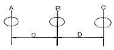
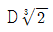
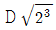
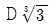
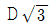
(정답률: 35%)
46. 수차의 공동현상 방지법이 아닌 것은?
- 흡출수두를 증가시킨다.
- 적당한 회전수를 선정한다.
- 재료를 스테인레스강으로 사용한다.
- 손상된 부분을 조속히 수리한다.
(정답률: 39%)
47. 화력발전소에서 발생되는 가장 큰 손실은?
- 연도배출가스의 손실
- 복수기 냉각수에 의한 손실
- 소내용 동력에 의한 손실
- 터빈 및 발전기 자체의 손실
(정답률: 38%)
48. 종합효율 34.4%의 화력발전소에서 열량 5000kcal/kg의 석탄 1㎏이 발생하는 전력량은 몇 kWh 인가?
- 1.5
- 1.7
- 2.0
- 2.3
(정답률: 27%)
49. 발전기의 열을 냉각시키기 위하여 수소를 사용할 때의 장점이 아닌 것은?
- 수소의 비중이 공기보다 적어 풍손이 1/10로 감소한다.
- 냉각용 수량이 증가한다.
- 공기냉각보다 발전기의 기초구조가 매우 단단해진다.
- 동일 정격출력에서 공기냉각방식 때 보다 기계는 소형이 된다.
(정답률: 38%)
50. 유량도를 기초로 하여 가로축에는 1년 365일을, 세로축에는 유량을 취하고, 유량이 큰 것부터 순차적으로 배열한 곡선은?
- 적산유량곡선
- 수위유량곡선
- 유량도
- 유황곡선
(정답률: 30%)
51. 미분탄 연소방식을 스토우커 연소방식에 비교할 때 장점이 될 수 없는 것은?
- 연소 조절이 쉬우며 뱅킹손실이 적다.
- 배기가스 중에서 재를 많이 제거할 수 있다.
- 보일러 효율이 높다.
- 부하 변동에 대하여 신속히 응할 수 있다.
(정답률: 40%)
52. 수용가의 전기설비가 전등 100W×100개, 전열 3kW×5개, 소형전기기구 200W×20개, 동력 5kW×5개라고 할 때 이 수용가의 총 설비용량은 몇 kW 인가?
- 54
- 140
- 150
- 235
(정답률: 39%)
53. 그림에서 Cs=0.5㎌, Cm=0.15㎌일 때 작용정전용량은 몇 ㎌ 인가?
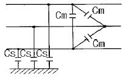
- 0.62
- 0.75
- 0.82
- 0.95
(정답률: 24%)
54. 폐란티현상이 생기는 원인은?
- 전선로의 인덕턴스 때문
- 누설콘덕턴스 때문
- 선로의 정전용량 때문
- 선로의 저항과 인덕턴스 때문
(정답률: 33%)
55. 고온의 도전성 가스유체를 이용하여 발전하는 방식은?
- MHD 발전
- 열전기 발전
- 원자력 발전
- 기력 발전
(정답률: 37%)
56. 송전선로에 코로나가 발생했을 때 이점이 있다면 어느것인가?
- 계전기의 신호에 영향을 준다.
- 라디오 수신에 영향을 준다.
- 전력선 반송에 영향을 준다.
- 고전압의 진행파가 발생하였을 때 뇌서지에 영향을 준다.
(정답률: 42%)
57. 단일부하 배전선에서 부하역률 cosθ, 부하전류 Ｉ, 선로저항 r, 리액턴스를 x라 하면 배전선에서 최대 전압강하가 생기는 조건은?
- cosθ = r/x
- sinθ = x/r
- tanθ = x/r
- tnaθ = r/x
(정답률: 35%)
58. 전력용 콘덴서의 방전코일의 역할은?
- 잔류전하의 방전
- 고조파의 억제
- 역률의 개선
- 콘덴서의 수명연장
(정답률: 37%)
59. 수차발전기에서 부하가 변해도 입력 수량을 자동으로 조절해 일정한 회전수를 유지하는데 필요한 것은?
- 밸브
- 조속기
- 흡출관
- 안내날개
(정답률: 52%)
60. 디지털 계전기의 특징으로 틀린 것은?
- 마이크로컴퓨터에 의한 폭넓은 연산이 가능하다.
- 계전기의 특성이 변화하지 않는다.
- 계전기의 종류에 관계없이 장치의 표준화가 가능하다.
- 신뢰성이 낮다.
(정답률: 57%)